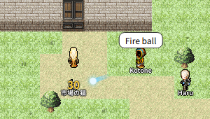
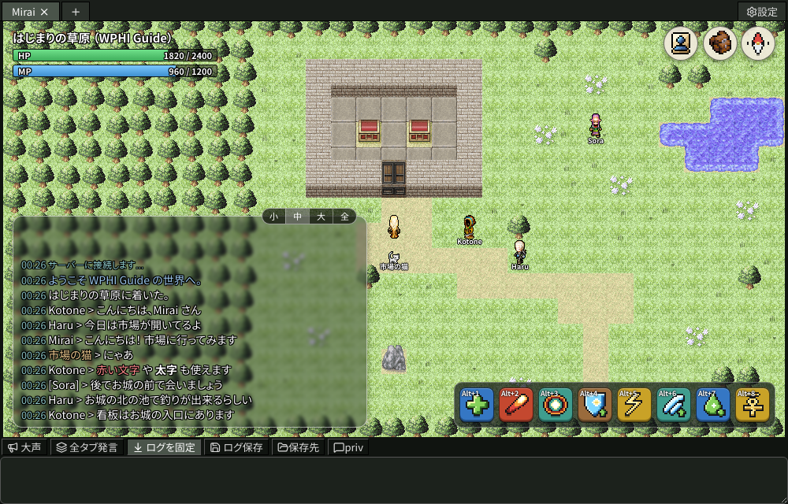
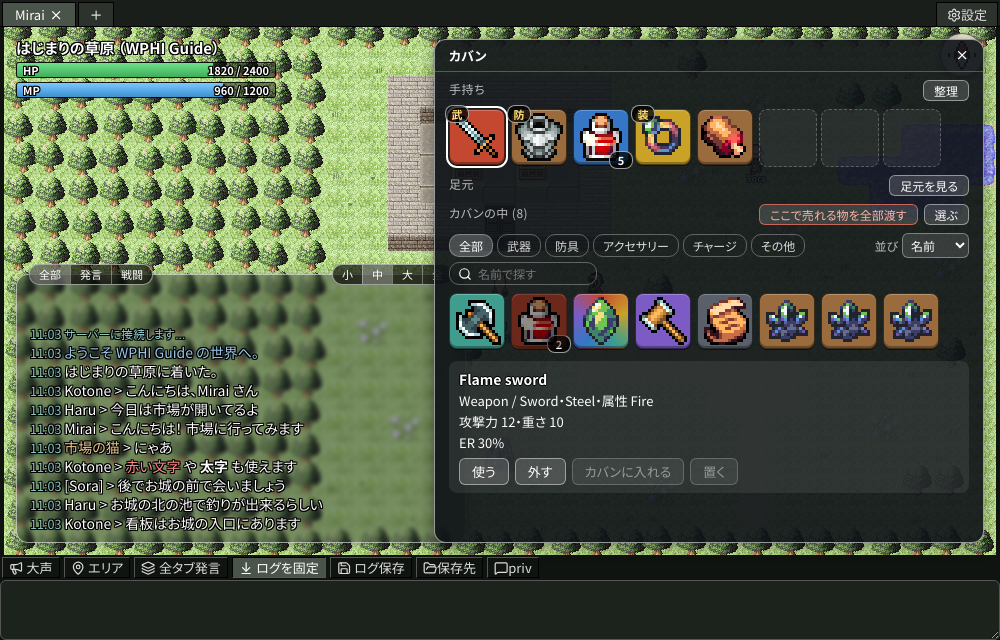

PHI のクライアント
Windows 用だった Philly を作り直し、Windows・macOS・Linux で動くようにしました。
Philly のキー操作、メニュー、スキン、キャラグラをそのまま使えます。
v6 プロトコルに対応した世界(朱蓮 SYUREN など)では、7x7 マスより広い、窓いっぱいの地図で遊べます。
キーを押した瞬間に歩き出し、持ち物は世界ごとに使える無限バッグ(カバン)に入ります。

使い方は利用者ガイドに画像付きで書いています。
Philly で見えるのは、自分を真ん中にした 7x7 マスです。
v6 の世界では、WPHI は窓に入るだけのマスを描きます。
窓を広げると、その分だけ遠くまで見えます。
最大は 99x99 マスで、世界によっては狭めています。
壁に囲まれて見えない所(違う階になった建物の中)は、斜線の網掛けで描きます。
広い地図の中に真っ黒の穴が空いて見える事はありません。
Philly はキーを押すとサーバへ送り、新しい地図が届いてから絵を切り替えます。
サーバまでの往復が遅いと、その分だけ歩き出しが遅れます。
v6 の世界では、WPHI はキーを押した瞬間に地図を滑らせて1マス進みます。
サーバの返事は歩きながら受け取ります。
長押しで歩く間は、1歩を滑りきってから次の1歩へ進むので、止まらずに動きます。
地図を滑らせるのは、メニューの「表示」→「マップを滑らかに動かす(試験中)」を選んだ時です。
v6 の世界では、カバンは世界ごとに使える無限バッグです。
右上のリュックのボタンで開き、手持ちの 8 個とカバンの中身を、どこからでも出し入れ出来ます。
アイコンの絵は武器の種類と用途で変わり、アイコンの背景の色は属性で変わります。

ログに流れた発言や戦闘の行を読み取り、地図のキャラの上に吹き出しや数字を出します。
誰が話したのか、誰がどれだけ削られたのかを、ログを読まずに地図で追えます。

演出はログの文面から決めるので、v6 でない世界でも出ます。
サーバによって文面が違うと、出ない演出があります。
| Philly | WPHI(v6 でない世界) | WPHI(v6 の世界) | |
|---|---|---|---|
| 見える範囲 | 7x7 マス | 7x7 マス | 窓いっぱい(最大 99x99 マス) |
| 歩き出し | 地図が届いてから | 地図が届いてから滑らせる | キーを押した瞬間 |
| カバン | 無し | 無し | 世界ごとに使える無限バッグ |
| 吹き出しと HP・MP の数字 | 無し | 有り | 有り |
| 動く OS | Windows | Windows、macOS、Linux | |
| 窓の形 | 地図とログが別の窓 | 地図に重ねる「モダン」と、Philly と同じ「クラシック」から選ぶ | |
開いたページから、OS に合ったファイルを取得してください。
WPHI のソースコードは MIT ライセンスです。署名とプライバシーの方針は Code signing policy と Privacy policy にあります。
| OS | ファイル | 使い方 |
|---|---|---|
| Windows | WPHI-<版>-windows.zip | 展開して WPHI.exe を起動します |
| Windows | WPHI_<版>_x64-setup.exe | インストーラです |
| macOS | WPHI-<版>-macos.zip、WPHI_<版>_universal.dmg | Intel と Apple Silicon の両方で動きます |
| Linux | WPHI-<版>-linux.zip(AppImage)、WPHI_<版>_amd64.deb |
どのファイルも署名していないので、OS が警告を出します。
xattr -dr com.apple.quarantine WPHI.app を実行して、隔離属性を外してから開いてくださいlibfuse2)が要ります。無い時は APPIMAGE_EXTRACT_AND_RUN=1 を付けて起動してください新しい版が出ると、起動した時に知らせます。
自動では入れ替えないので、このページから取得し直してください。
キャラを選ぶと接続し、タブが1つ開きます。